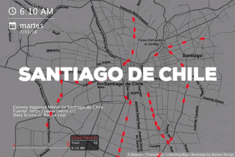
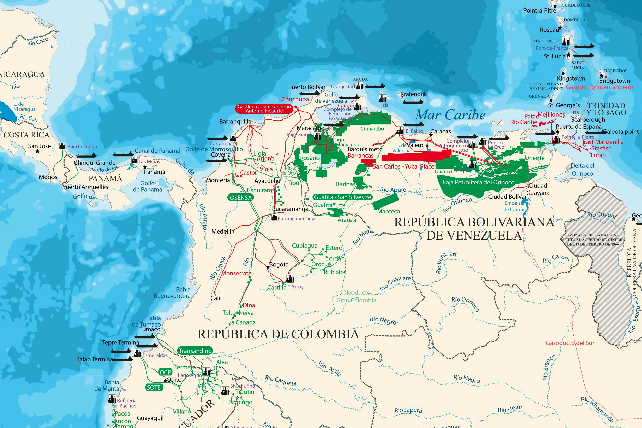
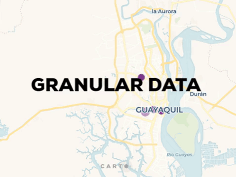
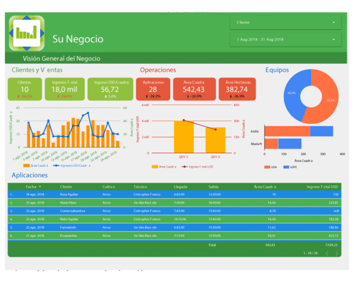
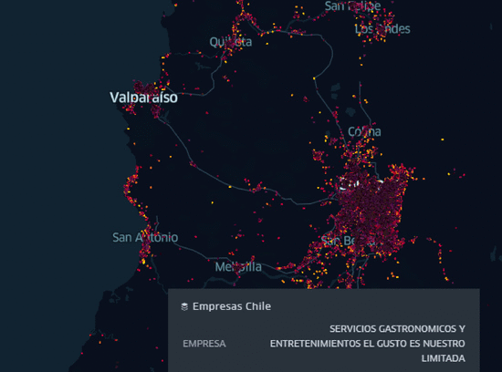
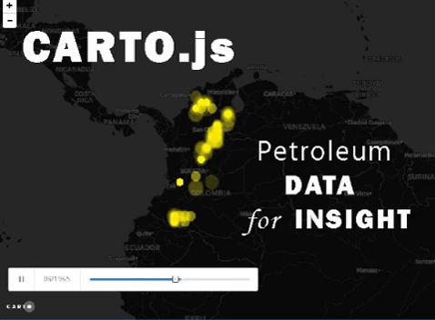
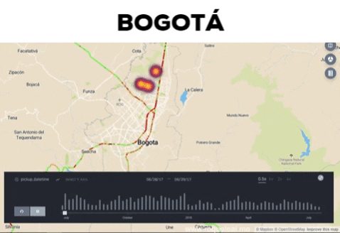
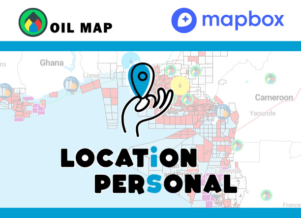
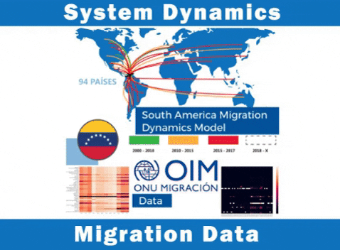
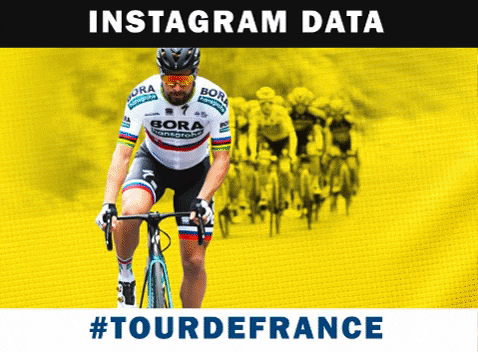

Disfruto compartir la aplicación de nuevas tecnologías en soluciones prácticas con el uso de datos en LATAM para generar conocimientos novedosos y una visualización atractiva

Host para compartir y viralizar el conocimiento de los principales yacimientos de crudo y gas del mundo

Modelo del sistema Metro de Santiago de Chile 🇨🇱 desarrollado en Processing gracias al API de TransitLand y las librerías Pandas de Python 🚇

🗺 🛢 Mapa de las actividades petroleras upstream, midstream y downstream de América del Sur

Abstracción de una agrupación granular de datos para alcanzar un nuevo significado del espacio-tiempo

Monitores de inteligencia de negocios para el reporte de operaciones en campo por una aplicación móvil y su despliegue en DataReport, un práctico caso de BI para PyMEs

A propósito de Uber y sus herramientas OpenSource de visualización de datos, comparto una visualización de la Población Empleada en Chile, teniendo por fuente un ejercicio de Geodatamining y la exploración del API´s de geocodificación masiva

Los datos disponibles y de uso público en la web son asombrosos, en este caso para representar un 20% de las empresas registradas en el Servicio de Impuestos Internos de Chile, utilizando técnicas de Web scraping con Python y usar el API de Here para una geocodificación masiva y avanzada de los resultados, un total de 120.000 ubicaciones

Las migraciones su desplazamiento y magnitudes de una diáspora llamada Venezuela, los datos de la ONU al 2017, nos reflejan los países destino y la dimensión de sus esfuerzos en este proceso migratorio, esta visualización nos presenta un origen y los múltiples destinos de este fenómeno

Continúo explotando el API de Mapbox, en esta oportunidad como una solución de consulta del tráfico en tiempo real para cualquier localidad, perfectamente integrable a cualquier solución espacial

Uno de mis geopropositos en aprender Javascript es su utilidad en usar las APIs. En esta ocasión, consultando los datos de la Secretaria de Hidrocarburos de Colombia y con las librerías de CARTO.js y Torque.js fue posible hacer una visualización de la evolución de las actividades de perforación en el país neogranadino
Contar historias con los datos, en Memoria a los Desaparecidos en la Argentina, una visualización de un proceso que todos debemos recordar para que no vuelva a pasar, sin duda en ocasiones como esta, un dato es más que una estadística
Datos colectados a cada instante desde su origen hasta nuestro mapa, gracias a librerías de Phyton y Leaflet.js los datos cobran vida y nos muestran su comportamiento en tiempo real
En este Jupyter Notebook me permito proponer un modelo de pronóstico a largo plazo del precio spot del petróleo crudo West Texas Intermediate (WTI) utilizando el nivel de inventario de petróleo de Estados Unidos y basado en los datos alojados en la web del Energy Information Administration (EIA).
Un Jupyter Notebook utilizando el REST API de Twitter a manera de obtener una Nube de Palabras y un Grafo de las 40.000 primeras interacciones de las cuentas @ECOPETROL_SA y @ANHColombia durante el evento Firma de Contratos OffShore en Colombia
Twitter y Spark Juntos, obtiene los temas de tweet más populares según una ubicación y según el volumen de tráfico en streaming de Twitter, permitiendo graficar diferentes variables de estas tendencias

Se analizan los datos de 54 tiendas pertenecientes a una importante red de supermercados del Ecuador, a manera de conocer el comportamiento de sus clientes, proponer un modelo de agrupamiento y presentar un escenario de pronóstico de transacciones

Una aproximación científica de diferentes métodos para colectar y analizar Twitter con herramientas de Python
Utilizando Scrapy para extraer los datos de Instagram y transmitirlos en Kafka es posible conectarlos a PowerBi y crear Dashboards asociados a la respuesta de los usuarios de esta importante red social
Utilizaremos datos de Uber para Ciudad de México a manera de conocer la dinámica de usuarios y conductores

Continuamos explorando Ciudad de México en esta ocasión para conocer los patrones Origen-Destino de los usuarios de Uber identificando aquellas áreas de mayor densidad dentro de esta Ciudad

En Uber los datos que se recopilan permiten reflejar la movilidad de las ciudades, por primera vez es posible reflejar esta dinámica en Quito, en esta visualización se utilizan las herramientas de Kepler.gl y el poder de los datos de Uber para presentar al período de julio 2017 a julio 2018, parte de las interacciones reflejadas entre los conductores y usuarios de plataforma
El primero de mayo del 2019, fue una fecha muy agitada en Venezuela por ello en esta primera entrega me he permitido extraer y presentar el potencial que tienen los datos de Instagram para visualizar un acontecimiento y conocer las repercusiones

Un colega me invito a seguir aplicando modelos con datos de Uber de manera que ahora te invito a explorar la ciudad de Bogotá para descubrir su dinámica de tráfico

En esta ocasión me permito republicar la primera reseña de OilMap en esta oportunidad MapBox y su equipo comparten sus primeras impresiones de mi proyecto; sin su ayuda no seria posible crear mapas y visualizaciones sorprendentes
Podría ser interesante localizar un Heatmap de tweets para Ecuador. Utilizando la librería de tweepy para interactuar con la API de Twitter y los servicios de #PowerBi es posible crear una interfaz simple usar y descubrir las interacciones de los usuarios, su comportamiento y diferentes tendencias espaciales
Localizar una tendencia en #Instagram y visualizar las relaciones en un mapa, es posible programar un algoritmo y entrenarlo con Machine Learning para identificar los principales post asociados al #GiroDItalia ubicando los usuarios desde el mismo lugar donde sucede el evento y descubriendo una nueva forma de ver este evento
En este post, realizaré un análisis exploratorio del conjunto de datos de la plataforma de Airbnb extraído gracias a la programación de un Spider de Scrapy para comprender el panorama del alquiler de inmuebles en Brasil y sus ciudades con motivo a la Copa América 2019
Perú una exploración de los usuarios de Airbnb, es posible usar los datos de esta red social para descubrir interesantes insights en Lima, Cusco, Trujillo y todo el territorio peruano desde una nueva visión para entender el mercado inmobiliario y el sector turístico

El fenómeno de las migraciones en Sur América, causas y proyecciones de este fenómeno es posible visualizar diferentes escenarios utilizando los datos de la ONU, el Banco Mundial y la Fundación para la Paz. En esta oportunidad utilizando Python y las librerías de Pandas, Numpy, GeoPandas y Seaborn basados en el modelo de System Dynamics para el estudio de la dinámica de las poblaciones
“¡Las personas que aman comer siempre son las mejores personas!” Por el amor a la comida, decidí explorar TripAdvisor. Esta visualización incluye información sobre los restaurantes en México utilizando Python y el poder de MapBox y PowerBi

Me he centrado en los datos y las oportunidades para comprender mejor las ciudades inteligentes, en este ejemplo, me estoy divirtiendo usando los datos de Waze con scripts Python y R en Power BI que interactúan en Mapbox Visual para analizar los cambios en el tráfico la congestión de los vehículos en San Francisco en el transcurso de una semana

Los desportes son espacios donde convergen muchas emociones, especialemente en Instagram para el #TourdeFrance me he permitido extraer los post y estructuralos en una visualización dinámica y temporal de las inteacciones
En esta oportunidad mi curiosidad se enfoca en un contexto global, analizar los temores de seguridad marítima en el Estrecho de Ormuz, una ruta vital para el envío de petróleo. Utilizar Python y los datos de Marine Traffic son la combinación perfecta para representar una pequeña parte del enrutamiento de los tanqueros petroleros, identificando las áreas sensibles del transporte de petróleo, actores y la línea de tiempo de las recientes tensiones en el Golfo